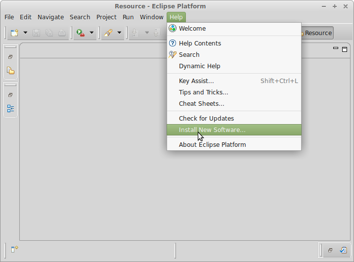
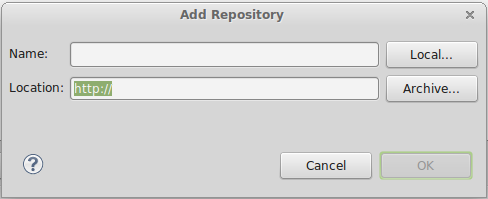
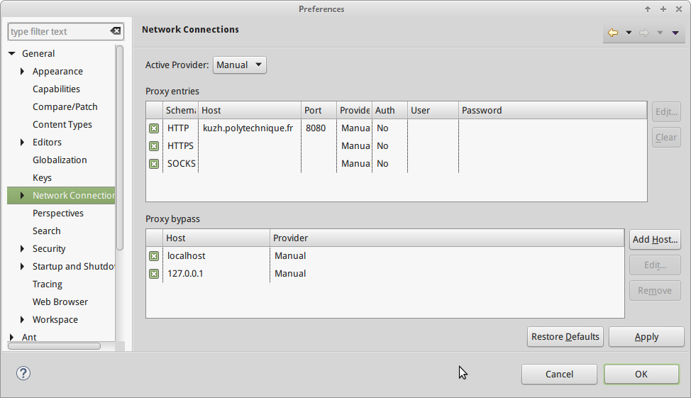

Eclipse被称为编程的瑞士军刀, 意思就是只用一个eclipse就可以做很多事情.
最近越来越喜欢eclipse了, 因为作为编辑器而言, eclipse的编辑器让我用起来最舒服的一个(配合一些快捷键以后更是非常爽). 这半年多来发现了一些非常好用的eclipse的插件, 有了这些插件, eclipse可以做更多的事情... 接下来简单介绍一下:
插件安装的方法
先简单说一下eclipse的插件安装方法, 在eclispe界面上, 点击: Help->Install New Software:

之后添加对应的URL就可以了...

ADT
eclipse里添加的URL:
https://dl-ssl.google.com/android/eclipse/
这个不用说了吧, Eclipse已经基本上是android开发的御用IDE了.
PyDev
URL:
http://pydev.org/updates
python的开发更需要有一个提示的东东(好像叫pyLint, 就是可以发现代码里的一些显然的错误), 这个插件装好以后我就很少用geany写python程序了, 尤其是当程序超过100行以后...
但是让人不爽的是, 他需要新建一个project才能运行. 这也是Eclipse的一个让人不爽的方面. 如果是一个小的python程序的话我还是会用geany. 另外, 强烈推荐bpython作为python的terminal, 非常爽快!!
color theme
URL:
http://eclipse-color-theme.github.com/update
修改配色的一个插件, 非常喜欢, 因为默认的配色看的时间长了眼睛就不舒服... 有多种配色方案可选.
jigloo
这是当年学java GUI编程的时候用到的, 可以拖放着来写Swing/AWT的GUI代码... 有点像现在ADT设计界面的东西...
不过我不喜欢写java的GUI... 乱糟糟的...
做这个的机构已经很久没有更新了... 不过2010年的版本现在用还是没有问题的.
greenUML
这个之前的帖子已经介绍了, 写报告的时候可以用一用...
xmind
这个"插件"已经作为一个独立的软件了... 用来画思维导图的工具, 蛮好用的.
作为一个独立的软件下载的话, 去这里.
TeXlipse
URL:
http://texlipse.sourceforge.net/
没错! Eclipse也可以写tex的...
不过这个我装了但是没有用(因为发现它的时候报告已经写好了...). 貌似也可以实时预览的, 再加上eclipse的编辑器的提示功能, 应该不错!
设置代理
X是个神奇的学校, 所以上网要设置代理..... 关于设置代理的问题在之前一篇帖子里提到了, 粘过来:
window → preference → General → Network Connections

插件卸载的方法
说不定哪一天也会需要卸载插件, 卸载的方法是 :
Help--> About Eclipse Platform--> Installation Details
最后再补充一句, Eclipse的最大优势是编辑器非常讨我喜欢, 但是缺点是在老机器上运行比较卡, 而且不管写什么都要先指定workspace以及建立一个project. 如果想要一把轻量级的"瑞士军刀"的话, geany是个不错的选择.
Disqus 留言